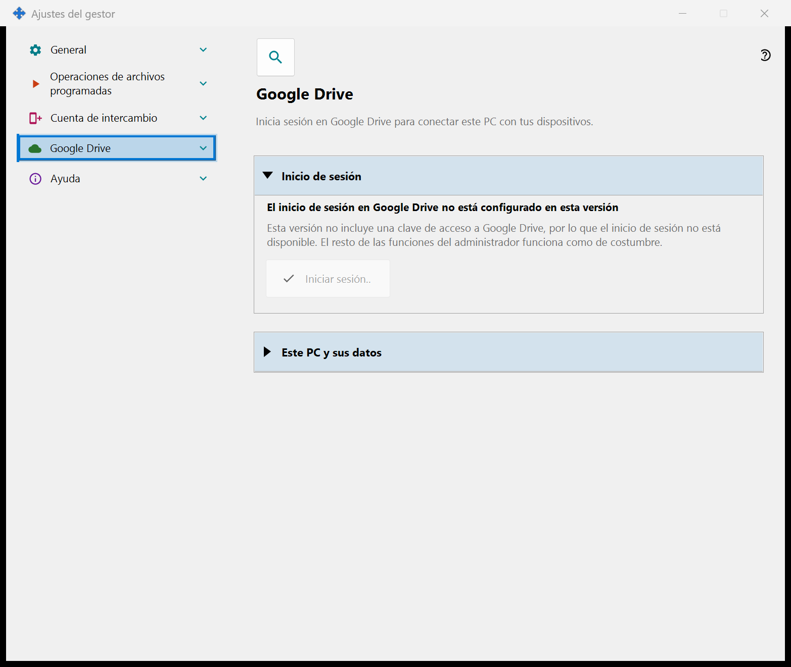
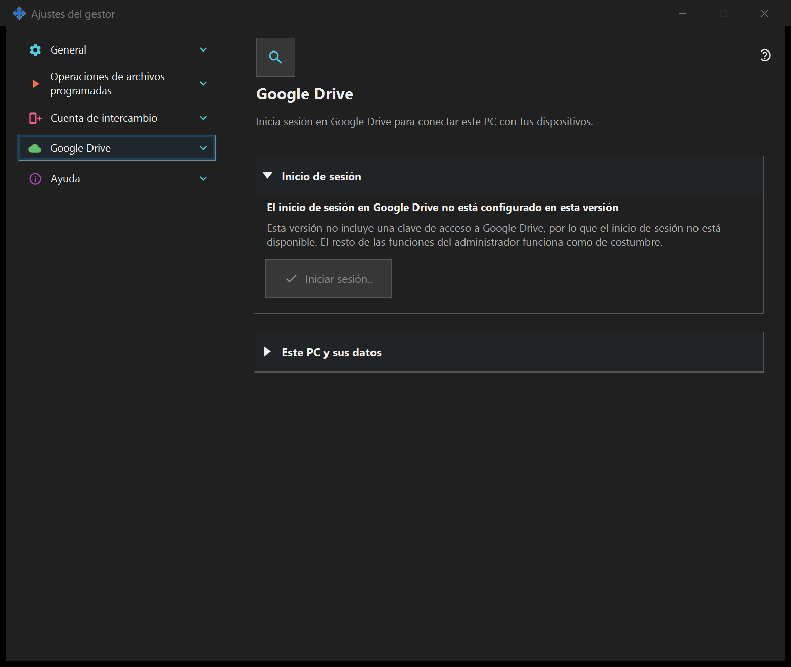

Ajustes del gestor
Ajustes del gestor
Para qué sirve
Inicio, tema, idioma, cuenta remota, publicación, portapapeles y operaciones programadas pertenecen al gestor y no requieren un servidor local. Si el componente de uso compartido SFTP está instalado, sus páginas forman un grupo en esta ventana.


En este orden
Abra desde la bandeja o los enlaces de componentes. Abrir y cerrar no inicia ni detiene servidores. El acceso remoto no requiere un servidor local.
Los elementos
Ajustes del gestor
Inicio, tema, idioma, cuenta remota, publicación, portapapeles y operaciones programadas pertenecen al gestor y no requieren un servidor local. Si el componente de uso compartido SFTP está instalado, sus páginas forman un grupo en esta ventana. Abra desde la bandeja o los enlaces de componentes. Abrir y cerrar no inicia ni detiene servidores. El acceso remoto no requiere un servidor local.
Ajustes del gestor
Inicio, tema, idioma, cuenta remota, publicación, portapapeles y operaciones programadas pertenecen al gestor y no requieren un servidor local. Si el componente de uso compartido SFTP está instalado, sus páginas forman un grupo en esta ventana. Abra desde la bandeja o los enlaces de componentes. Abrir y cerrar no inicia ni detiene servidores. El acceso remoto no requiere un servidor local.
Google Drive
Aquí este PC inicia sesión en tu propia cuenta de Google para que la aplicación pueda usar su carpeta oculta privada en tu Google Drive. Pulsa «Iniciar sesión..»: se abre el navegador predeterminado, confirmas el acceso en Google y Google devuelve la respuesta a este PC mediante una dirección local; después puedes cerrar la pestaña del navegador. El único permiso que se solicita es el acceso a la carpeta oculta propia de la aplicación en tu Google Drive (ámbito drive.appdata): la aplicación no puede ver ningún otro archivo de tu Google Drive y no recibe ni la dirección de correo ni datos del perfil. Si Google concede un acceso distinto del solicitado, el inicio de sesión se rechaza. La línea en negrita muestra el estado. «No se ha iniciado sesión en Google Drive»: «Iniciar sesión..» está disponible; si el acceso se revocó o caducó, la línea de abajo lo indica y pide iniciar sesión de nuevo. «Esperando el inicio de sesión en el navegador..»: completa el inicio de sesión en el navegador o pulsa «Cancelar». «Sesión iniciada en Google Drive»: este PC está conectado con tu Google Drive y se muestran su nombre y su identificador corto. «Google Drive no está disponible en este momento»: la línea de abajo indica el motivo - sin conexión, límite diario de subida alcanzado, sin espacio libre en tu Google Drive o un error de Google; sin conexión o ante un error, la aplicación reintenta por sí sola. «Cerrando sesión en Google Drive..» aparece mientras se cierra la sesión. «Salir en este dispositivo» hace una sola pregunta y la respuesta predeterminada es «No». Tras «Sí» revoca el acceso en Google, elimina los registros de este PC de la carpeta oculta de tu Google Drive y elimina el token de acceso guardado en este PC; una línea bajo los botones indica cuántos registros se eliminaron o que Google no confirmó la revocación, que entonces puedes hacer en la configuración de tu cuenta de Google. En una versión sin clave de acceso de Google la página muestra «El inicio de sesión en Google Drive no está configurado en esta versión», «Iniciar sesión..» está desactivado y el resto de las funciones del administrador funciona como de costumbre.


Ajustes del gestor
Inicio, tema, idioma, cuenta remota, publicación, portapapeles y operaciones programadas pertenecen al gestor y no requieren un servidor local. Si el componente de uso compartido SFTP está instalado, sus páginas forman un grupo en esta ventana. Abra desde la bandeja o los enlaces de componentes. Abrir y cerrar no inicia ni detiene servidores. El acceso remoto no requiere un servidor local.
Ajustes del gestor
Inicio, tema, idioma, cuenta remota, publicación, portapapeles y operaciones programadas pertenecen al gestor y no requieren un servidor local. Si el componente de uso compartido SFTP está instalado, sus páginas forman un grupo en esta ventana. Abra desde la bandeja o los enlaces de componentes. Abrir y cerrar no inicia ni detiene servidores. El acceso remoto no requiere un servidor local.
Ajustes del servidor de intercambio
Ajustes del gestor · Ajustes de uso compartido SFTP · Ajustes del servidor de intercambio